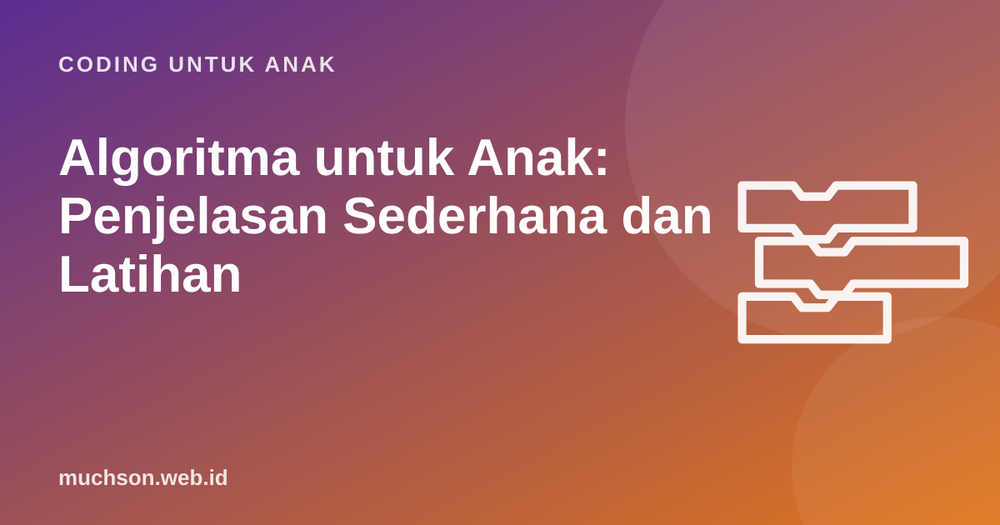

Beranda › Artikel › Coding untuk Anak
Coding untuk AnakAlgoritma untuk Anak: Penjelasan Sederhana dan Latihan
Algoritma terdengar seperti kata untuk ilmuwan, padahal setiap pagi anak Anda menjalankan beberapa algoritma: bangun, mandi, sikat gigi, memakai seragam. Artikel ini menunjukkan cara menjelaskan algoritma dengan bahasa anak, kesalahan yang paling sering terjadi, dan latihan bertingkat bersama Robo yang bisa langsung dimainkan.

Penjelasan untuk anak dalam tiga kalimat
"Algoritma adalah urutan langkah untuk menyelesaikan sesuatu. Kalau urutannya benar, hasilnya benar. Komputer sangat patuh: ia menjalankan langkah persis seperti yang kita tulis, tidak lebih dan tidak kurang."
Kalimat terakhir itu kunci. Manusia bisa menebak maksud kita. Kalau kita bilang "ambilkan gelas", orang lain tahu harus berjalan ke dapur dulu. Komputer tidak. Ia hanya melakukan yang tertulis. Pemahaman inilah yang membuat anak mulai berpikir teliti.
Contoh algoritma sehari-hari
Ajak anak menukar urutan dengan sengaja. "Berkumur dulu, baru sikat gigi" hasilnya mulut penuh busa. "Pakai sepatu dulu, baru kaus kaki" hasilnya lucu. Lewat contoh konyol, anak paham bahwa urutan menentukan hasil.
| Kegiatan | Contoh langkah yang sering terlewat | Pelajaran |
|---|---|---|
| Membuat teh manis | Merebus air, atau mengaduk | Langkah yang "sudah jelas" bagi kita tetap harus ditulis |
| Berangkat sekolah | Mengunci pintu | Algoritma yang baik memikirkan akhir tugas |
| Main petak umpet | Menghitung sampai berapa | Langkah butuh angka atau batas yang jelas |
Tiga ciri algoritma yang baik
- Jelas. Setiap langkah hanya punya satu arti. "Belok" kurang jelas; "belok kanan" jelas.
- Berurutan. Langkah dijalankan dari atas ke bawah, satu per satu.
- Selesai. Algoritma punya akhir. Kalau tidak pernah selesai, ada yang salah, kecuali memang dirancang berulang terus seperti lampu lalu lintas.
Untuk anak kelas atas SD, tambahkan ciri keempat: efisien. Dua algoritma bisa sama-sama benar, tetapi yang satu lebih pendek. Di kelas coding, ini sering dihadiahi "bintang efisiensi".
Latihan bertingkat bersama Robo
Robo hanya mengerti tiga perintah: maju 1 langkah, belok kiri, dan belok kanan. Belok artinya berputar di tempat, Robo tidak pindah kotak. Di level tertentu ada permata 💎 yang harus diambil dengan perintah ambil permata sambil berdiri di atasnya.
Kalau Robo menabrak dinding, jangan langsung memberi jawaban. Tanyakan: "Di langkah ke berapa Robo mulai salah jalan?" Menemukan langkah yang salah adalah keterampilan debugging, dan itu sama pentingnya dengan menyusun langkah yang benar.
Kesalahan yang paling sering terjadi
Dari algoritma ke program
Algoritma adalah rencananya, program adalah algoritma yang ditulis dalam bahasa yang dimengerti komputer. Di Scratch, algoritma "sapa lalu berjalan" ditulis dengan blok seperti ini:
Setelah paham algoritma linear (lurus tanpa cabang), anak siap ke konsep berikutnya: pengulangan untuk langkah yang sama, lalu percabangan untuk memilih langkah berdasarkan keadaan. Urutan inilah yang dipakai hampir semua kurikulum coding anak, termasuk pelajaran gratis di PixelKode yang bisa dicoba anak tanpa mendaftar.
Tanya jawab
Apa pengertian algoritma untuk anak SD?
Apa contoh algoritma dalam kehidupan sehari-hari?
Apa bedanya algoritma dan program?
Bagaimana jika anak terus salah?
Sumber dan bacaan lanjut
- CS Unplugged: aktivitas algoritma tanpa komputer
- Code.org: kurikulum ilmu komputer untuk sekolah dasar
- Wing, J. M. (2006). Computational Thinking
- Scratch untuk pendidik